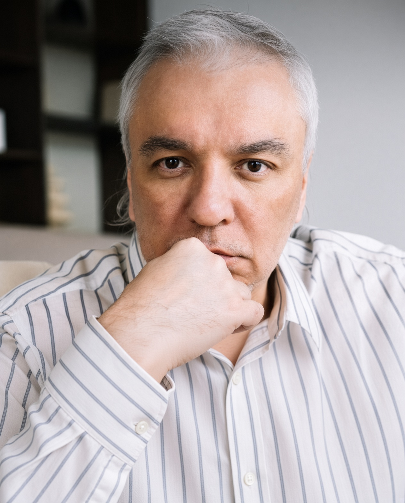

Место,нет состояния
Когда состояние не завершено — мир кажется отдельным и угрожающим.
Самоследование
Инструкция для самостоятельного исследования
Заметь состояние, в котором ты сейчас.
Одновременно посмотри перед собой и найди место, где этого состояния нет.
Удерживай оба места сразу. Не убирай состояние и не меняй его.
Подожди, пока оно само перестанет занимать всё и начнёт завершаться.
Ничего больше делать не нужно.
Как это работает
Записаться на сессию
Метод «Место, в котором нет состояния»
Это не про то, чтобы с чем-то бороться или что-то менять. Это про то, чтобы дать состоянию место и дойти до конца.
1. Создаётся пространство
2. Касание фона
3. Полная реализация
4. Переход
Онлайн-сессия
Индивидуальная работа2000 ₽
Длительность: 60–90 минут (в зависимости от того, как состояние будет завершаться).
За одну сессию мы найдём то место, где вашего состояния нет, и вы сможете завершить то, что держало вас годами.
Написать в Telegram
Посмотреть схемы →
Метод «Место, в котором нет состояния»
Это не про то, чтобы с чем-то бороться или что-то менять. Это про то, чтобы дать состоянию место и дойти до конца.
1. Создаётся пространство
2. Касание фона
3. Полная реализация
4. Переход
Обо мне

Меня зовут Георгий Кокурин. Я кризисный психолог.
Работаю с незавершёнными состояниями через метод «Место, в котором нет состояния». Раньше занимался каббалой (Бней Барух, Лайтман), сейчас упростил это до простой практики, которая не требует усилия и напряжения.
Есть профессиональная переподготовка по психологии (МГУ) и сертификат по кризисной психологии.
Онлайн-сессии. Москва и удалённо.
Онлайн-сессия
Индивидуальная работа
2000 ₽
Длительность: 60–90 минут (в зависимости от того, как состояние будет завершаться).
За одну сессию мы найдём то место, где вашего состояния нет, и вы сможете завершить то, что держало вас годами.
Написать в Telegram
Написать в ВК